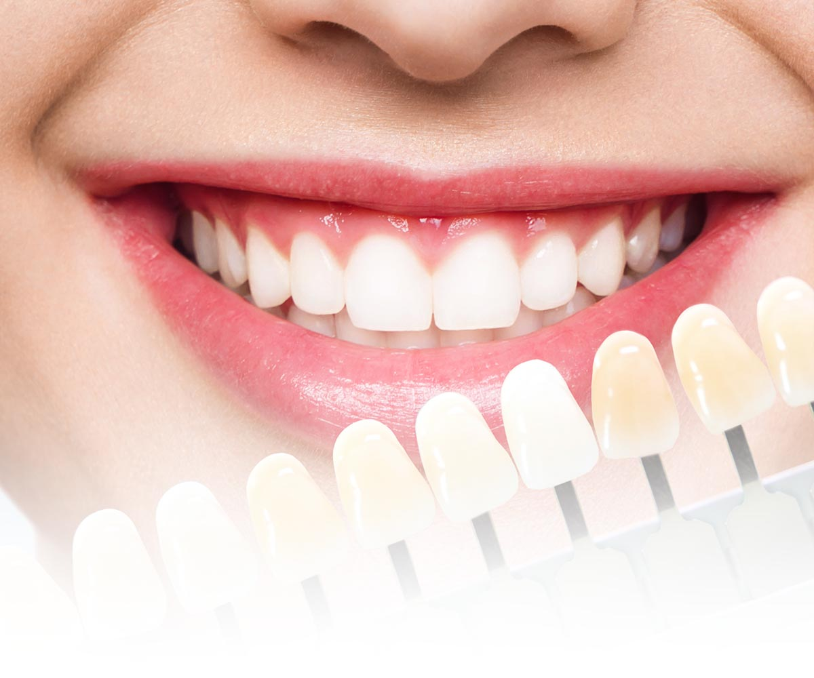

Fațete E-Max și fațete laminate: cheia unui zâmbet încrezător
Fațetele Emax, considerate standardul de aur în tehnologia cosmetică dentară, oferă o soluție inovatoare pentru o multitudine de probleme dentare. Fabricate meticulos din ceramică calitativă și durabilă, aceste fațete se remarcă prin durabilitate și rezistență de neegalat. Acestea servesc ca remediu excelent pentru cei care doresc să remedieze problemele estetice comune, cum ar fi dinții ciobiți, pătați sau nealiniați. Dacă sunteți în căutarea unei alternative la fatetele Emax, luați în considerare efectele transformatoare ale fațetelor laminate.
Fabricate la comandă în laboratoare dentare foarte specializate, fațetele Emax și fatetele laminate sunt lipite în siguranță de suprafața frontală a dinților dumneavoastră. Acest proces de lipire este o sarcină meticuloasă și delicată care necesită un stomatolog cu experiență vastă și experiență în manipularea fatetelor Emax și a fatetelor laminate. Aplicate corect, aceste fațete se îmbină perfect cu dinții tăi naturali, asigurând un zâmbet strălucitor, strălucitor, care reflectă personalitatea ta.
Care sunt avantajele fațetelor E-Max și ale fațetelor laminate?
Ce diferențiază fațetele Emax și fațetele laminate de celelalte tipuri? Să ne aprofundăm în suita lor impresionantă de beneficii. În primul rând, rezistența și longevitatea lor sunt de neegalat. Fațetele Emax și fațetele laminate, renumite pentru durabilitatea lor excepțională, trec testului timpului. Ele rezistă cu ușurință la uzura zilnică, scutindu-vă de vizitele frecvente la stomatolog. Într-o lume în care primele impresii contează, un zâmbet luminos și nepătat este un atu de neprețuit. Din fericire, fațetele Emax și fațetele laminate sunt excepțional de rezistente la pătare și ciobire, astfel puteți fi sigur ca dantura dvs rămâne nepătată și strălucitoare pentru anii următori. Confortul este o altă caracteristică esențială a fațetelor Emax și a fațetelor laminate.
Aceste fațete ultra-subțiri nu necesită nicio pregătire dentară, promițând o experiență de asamblare nepretențioasă și confortabilă. În plus, se simt la fel de naturali ca dinții tăi adevărați, așa că poți vorbi, mânca și râde fără discomfort.
Nu în ultimul rând, fațetele Emax și fațetele laminate sunt proiectate să reziste mulți ani. Această soluție de lungă durată pentru problemele tale cosmetice dentare este într-adevăr o investiție care merită luată în considerare.
Sunteți intrigat de posibilitățile pe care fatetele Emax și fatetele laminate le aduc sănătății și încrederii dumneavoastră dentare? Programați o consultație cu medicul dentist astăzi pentru a vedea dacă fatetele Emax, fatetele laminate sau o combinație a ambelor sunt potrivite pentru dvs. Lăsați fațetele Emax și fațetele laminate să deschidă ușa noului dvs. zâmbet încrezător. Folosiți aceste repere ca lumină călăuzitoare în luarea unei decizii bine informate. La urma urmei, imaginea dvs. nu merită decât tot ce este mai bun!